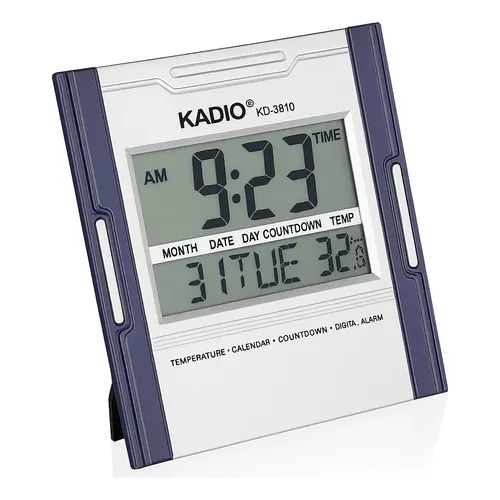
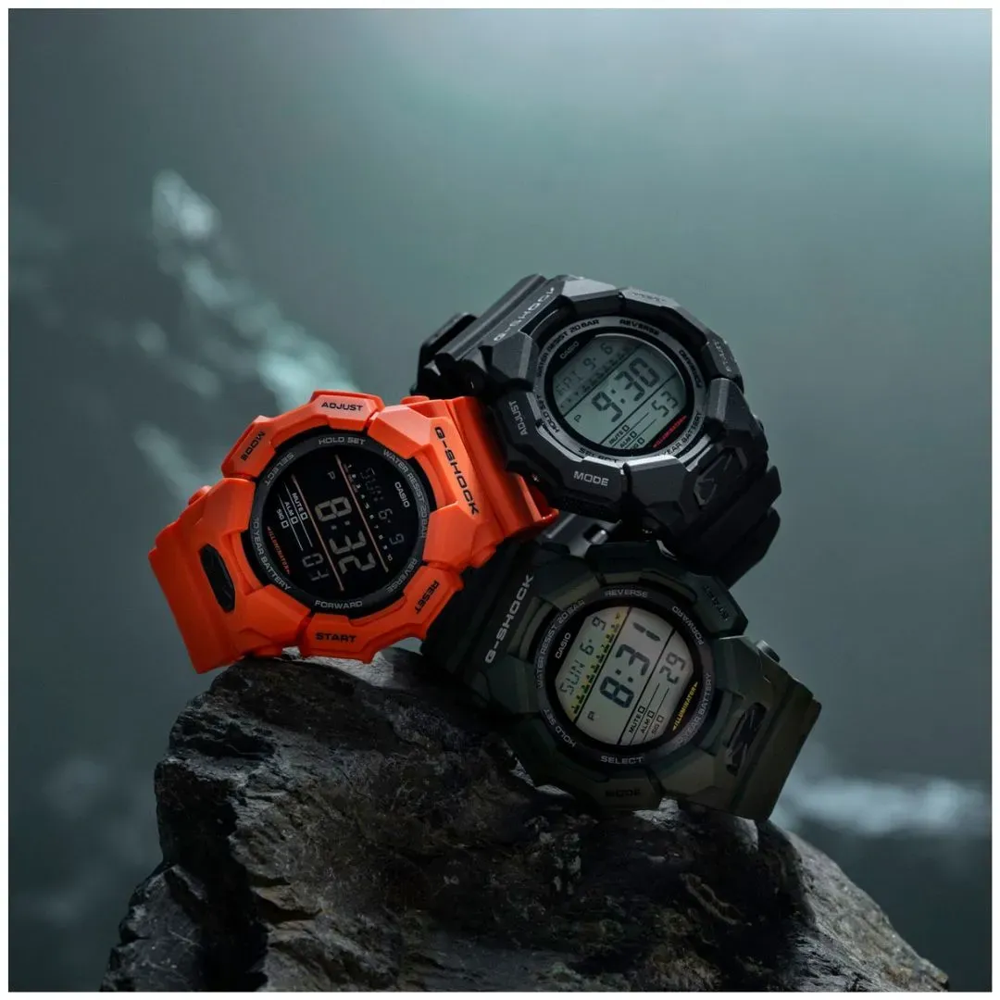

Muestra la hora con números en una pantalla LED o LCD. Son resistentes, económicos y muy prácticos para deportes y uso diario.


| Tipo | Pantalla | Funciones comunes |
|---|---|---|
| LED | Números luminosos rojos | Hora y fecha |
| LCD | Cristal líquido con luz de fondo | Cronómetro, alarma, luz |
| Deportivo | LCD resistente a golpes y agua | Cronómetro, temporizador, hora mundial |